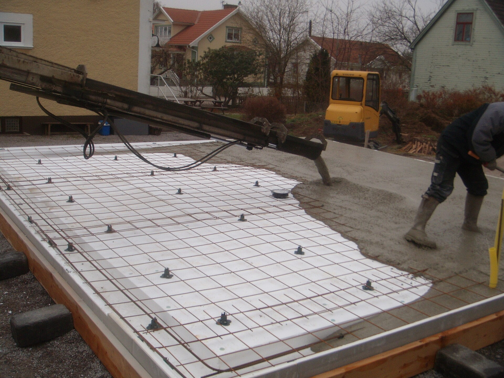

Types of house foundations: how repair differs for each one
Every house sits on one of a handful of foundation types, and the type decides how the house can fail, how a crew can reach the problem, and what a repair is likely to involve. A sloping floor in a pier-and-beam house and the same slope in a slab house are different problems with different fixes, even when the marble rolls the same way. Advice that ignores the type is advice about some other house.
This hub covers the four types that matter for repair: slab-on-grade, basement, pier-and-beam (raised), and crawl space on a stem wall. For each one it explains how the structure carries the house, how it typically fails, which repair methods apply, and how access changes the cost. It also covers two special cases homeowners ask about constantly: historic stone and block foundations, and new homes settling on filled lots.
Start with the identification section if you are not sure what your house sits on. Knowing the type takes two minutes, and it changes every conversation you have afterwards with an inspector, an engineer or a repair company, because it tells you which questions on this site apply to your home.
Request a free inspection
The four main types, and how to tell which one you have
Slab-on-grade is a single pour of concrete at ground level. The house is framed directly on the slab, plumbing runs beneath it, and there is no space under the home at all. Basement foundations are full-height walls of poured concrete or block sitting on footings below grade, carrying the house while enclosing a usable level underneath it. Both are concrete systems, but they fail in quite different ways, as the next sections show.
Pier-and-beam homes are raised off the ground on individual piers or posts, with wooden beams spanning between them and the crawl space open underneath. Stem wall crawl spaces look similar from the street, but a continuous concrete or block wall around the perimeter carries the edges of the house, with interior piers carrying the middle. Raised homes cluster where the pattern suits the ground and the era: older housing stock across the South, and raised cottages in New Orleans where lifting the house above wet ground was the point.
- Steps up to the front door and vents around the base of the house: pier-and-beam or crawl space
- A hatch or access panel in a closet or hallway floor: a crawl space underneath
- Full-height rooms below ground level, with small windows near the ceiling: basement
- The ground floor sits directly on concrete, with no access underneath anywhere: slab-on-grade
- Rows of brick, block or concrete piers visible beneath a raised porch: the pier-and-beam pattern
How do I know what type of foundation my house has?
Look for access. If you can get underneath the house through a hatch or vents and see posts, beams or low walls, you have a pier-and-beam or crawl-space foundation. If part of the house sits below ground level with full-height rooms, that is a basement. If the ground floor is concrete at ground level with nowhere to crawl, it is a slab.
What is the difference between pier and beam and a stem wall crawl space?
In a true pier-and-beam home, the house rests on individual piers or posts with beams spanning between them, and the perimeter may be open or skirted. In a stem wall crawl space, a continuous concrete or block wall around the perimeter carries the edges, with interior piers supporting the middle. The repairs overlap, but load paths and access differ, so the repair plan differs too.
The four types compared
The table puts the types side by side on the things a homeowner actually needs: how each one fails, what the repairs look like, how the crew gets at the work, and where the cost tends to land. Read your own row first, then read the others to understand why a neighbour's repair story may have almost nothing in common with yours.
One pattern runs through the table. Access is destiny. Types that let a crew see and reach the structure from underneath are cheaper to diagnose and cheaper to repair, because the money goes into structure rather than demolition and restoration. Types that hide the structure under concrete cost more to open up, which is why slab quotes carry lines for tunnelling or breakouts that crawl-space quotes never need.
That is also why the same symptom costs different money on different types. A sloping floor over a crawl space may turn out to be a day of re-shimming and one new support. The same slope in a slab home can mean exterior piers, tunnelling and floor restoration. When a neighbour tells you what their repair cost, the first question is what their house sits on. Without that, the number tells you almost nothing about your own job, and comparing quotes across foundation types misleads more often than it helps.
| Foundation type | How it typically fails | Typical repairs | Access for repair | Relative repair cost |
|---|---|---|---|---|
| Slab-on-grade | Soil swelling, shrinking or washing out beneath the slab; plumbing leaks under the concrete | Exterior or interior piers, tunnelling, slabjacking for sunken flatwork | Difficult: from outside, through tunnels, or through floor breakouts | Higher when interior work or tunnelling is needed |
| Basement | Walls bowing or cracking under sideways soil pressure; footing settlement at corners | Wall anchors, steel braces, carbon-fiber straps, piers under footings | Good access to walls from inside; footings from inside or outside | Wide range: straps at the low end, excavation at the high end |
| Pier and beam (raised) | Individual piers settling; beams and sills rotting; floors sagging between supports | Re-shimming, new interior piers, beam and joist replacement | Best access: crews work directly in the crawl space | Usually the lowest, unless wood replacement is extensive |
| Crawl space (stem wall) | Stem wall cracking; interior piers sinking; moisture damaging wood framing | Stem wall repair, added interior supports, drainage and moisture control | Good: low but workable crawl access | Low to mid-range; moisture control adds to the total |
Which foundation type is cheapest to repair?
Pier-and-beam and crawl-space homes are usually cheapest to repair because crews can reach the structure from underneath without breaking concrete. Slab repairs cost more when interior piers or tunnelling are needed, and basement wall work varies widely with the fix chosen. Across all types, published ranges put piers at $1,000–$2,500 each and a typical structural repair at $4,000–$12,000.
Slab and basement homes: two kinds of concrete, two kinds of repair
Slab repair is soil repair done through concrete. When the ground under a slab swells, shrinks or washes away, the slab loses support and cracks or tilts. The fix is piers driven beside or beneath the footing to reach stable soil, at published prices of $1,000–$2,500 per pier installed. The complication is reach: interior piers mean breaking the floor, so crews often tunnel under the slab from outside instead, and a proper quote says which route is planned and what flooring gets restored. Slab homes also hide their plumbing under the concrete, which is why a leak check belongs in the diagnosis before anyone blames the soil.
Basement repair splits in two. The footing can settle like any other, and piers fix that. But the walls have a second enemy a slab never faces: sideways soil pressure that bows them inward, especially where soil stays wet or freezes hard, the pattern behind the bowed-wall work common in Madison and Des Moines. Bowed walls are stabilised with anchors, braces or carbon-fiber straps, or rebuilt when movement has gone too far. Diagnosis matters here, because piers will not straighten a wall and straps will not lift a footing.
One more slab-specific trap deserves naming: the plumbing. Water and drain lines run under most slabs, and a slow leak can soften or wash out the soil supporting the concrete, producing settlement that looks exactly like a soil problem. Repairing the foundation over an active leak rebuilds the failure into the job. A pressure test of the plumbing is a cheap diagnostic next to a pier contract, and a quote for slab work that never mentions the plumbing has skipped a step. For basements, the matching trap is sealing: waterproofing a wall that is still moving treats the water and abandons the structure.
Can a slab foundation be repaired without breaking up my floors?
Often, yes. Exterior piers are installed from outside the home, and where interior support is needed, crews can tunnel under the slab from the perimeter instead of breaking the floor. Interior breakouts are still sometimes the practical route, and a good quote states which method is planned, what flooring is affected, and what restoration is included in the price.
Why do basement walls bow inward instead of the house sinking?
Because a basement wall fights sideways pressure as well as carrying the house. Saturated soil and frost push horizontally against the wall, and a wall that is only held at the top and bottom can bow inward over time. That is a wall problem, fixed with anchors, braces or straps, and it is different work from piers under the footing that stop a house sinking.
Pier-and-beam and raised homes: repair you can watch happen
Repairing a raised home is carpentry and masonry in the open. A crew working in the crawl space can see the piers, beams, joists and sill plates, test the wood, and measure exactly which supports have dropped. The common jobs are re-shimming piers that have settled, sistering or replacing rotted beams, and adding interior piers where spans sag. Because nothing is buried in concrete, diagnosis is faster and quotes for this type tend to be the most precise in the trade.
The raised home's enemies are moisture and time rather than dramatic soil failure. Standing water in a crawl space rots sills and beams, individual piers sink into soft spots, and floors develop a bounce or a slope that travels. In New Orleans the raised pattern is the historic norm, and house levelling there means shoring and re-supporting a structure designed to be lifted. For all raised homes, drainage and moisture control are part of the repair, not an upsell: fix the support and leave the water, and the new wood rots where the old wood did.
Moisture control belongs in the same conversation as structure on this type. A vapour barrier over bare crawl-space soil, working gutters and grading that moves water away from the perimeter all slow the rot that eats sills and beams. Inspectors also separate two lookalike problems down there: wood rot from moisture, and termite damage, which hollows wood from inside and needs a different remedy. A repair quote for a raised home should say which one it found, because sistering a termite-eaten beam without treating the infestation rebuilds the problem in new lumber.
How is pier and beam repair different from slab repair?
Pier-and-beam repair works on parts you can see and reach: re-shimming settled piers, replacing rotted beams or joists, and adding interior supports where floors sag. There is no concrete to break and no tunnelling. The failure set is different too, because wood and moisture are involved. Slab repair, by contrast, is almost entirely about soil movement under a concrete pad you cannot see beneath.
Does a raised home need new piers, or just re-shimming?
It depends on why the floor moved. If the existing piers are sound and the house has simply settled unevenly, re-shimming and levelling may be the whole job. If piers have sunk into soft soil, rotted or were spaced too far apart, shimming treats the symptom and the floor will move again. An inspection that checks pier condition, not just floor levels, tells you which case you have.
Historic stone and block foundations, and the new-build exception
Older cities carry a foundation type the other sections only touch: stone and block. In Des Moines, neighbourhoods like Sherman Hill and Beaverdale are full of stone and block foundations laid a century ago, and they behave like masonry, not concrete. Mortar fails grain by grain, stones shift, and water works through joints that were never meant to be waterproof. Repair is masonry craft: repointing with a mortar compatible with the original, resetting stone, relieving water pressure with drainage. What these walls usually cannot take is aggressive lifting, so be suspicious of any plan that treats a stone wall like a modern footing.
Block foundations, the younger cousins, crack along their mortar joints in the stair-step pattern described in the glossary, and they bow more readily than poured walls. At the other end of the age range sits the new-build problem: homes set on lots graded from cut and fill, including the bench lots around Boise, where loose fill on one side of the lot compacts and settles faster than the native soil on the other. The house is new and the movement is real, and the first repair step is paperwork: documenting elevations and cracks early, because builder warranties have windows and the evidence has to exist inside them.
For a new home, documentation is the repair that comes first. Photograph cracks with a ruler in the frame, keep a dated log of doors sticking or floors sloping, and save the elevation readings from any inspection. Builder warranty terms vary by builder and by state, and they are read from your contract, not from a website, but every version of them rewards a homeowner who reported movement early in writing and punishes one who mentioned it in a phone call two years later. If the builder's own crew offers to patch and monitor, get that offer, and its timeline, in writing too.
Can a historic stone foundation be repaired, or must it be replaced?
Most stone foundations can be repaired and kept. The work is masonry first: repointing failed mortar with a compatible mix, resetting shifted stones, and adding drainage to cut the water pressure behind the wall. Lifting or underpinning an old stone wall is done cautiously and sometimes not at all, because the wall was built as a system. Replacement is the last resort, not the default.
My house is only a few years old and already settling. What is going on?
New homes often settle on the soil that was dug out and put back during construction. Lots graded from cut and fill, like bench lots, can have loose fill on one side and firm native soil on the other, so one side moves more. Some settlement is expected; differential settlement that cracks walls and racks doors is a defect worth documenting early, while builder warranties still apply.
Frequently asked questions
What is a stem wall foundation?
A stem wall is the short concrete or block wall that rises from the footing around a home's perimeter, lifting the structure off the ground and forming a crawl space underneath. The stem wall carries the outer edges of the house while interior piers or posts carry the middle. Stem wall homes combine slab-like perimeter support with crawl-space access for repairs.
Slab or pier and beam: which has worse foundation problems?
Neither is worse in general; they fail differently. Slabs suffer when soil swells, shrinks or washes out beneath them, and repairs can be invasive. Pier-and-beam homes suffer wood rot, moisture damage and individual pier settlement, but repairs are usually easier to reach. The soil under the house and the water around it matter more than the type stamped on the plans.
How does foundation type change the cost of repair?
Type changes cost through access and method. Crawl-space and pier-and-beam work is reached from below, so labour goes into structure rather than demolition. Slab work may need tunnelling or floor breakouts, and basement wall work ranges from straps to excavation. The pricing unit stays similar across types: piers at $1,000–$2,500 each installed, typical structural repairs at $4,000–$12,000.
Can I convert my foundation to a different type?
Almost never in full. Converting a slab home to a crawl space, or the reverse, means rebuilding how the entire house is carried, and the cost dwarfs any benefit. What does happen is hybrid repair: piers added under a slab, new interior supports under a pier-and-beam floor, or a stem wall rebuilt in sections. Companies proposing a full conversion owe you an engineer's design behind it.
Do poured concrete foundations crack differently from block foundations?
Yes. Poured concrete walls usually crack in vertical or diagonal lines, often at weak points like window corners, and a single crack can leak a lot of water. Block walls crack along mortar joints in stair-step patterns and are more prone to bowing inward under soil pressure. Both can be structural or cosmetic, and width, pattern and movement over time decide which.
Does my foundation type affect resale value?
The type itself is not a defect and does not price a home up or down. What affects value is condition and documentation: unresolved movement scares buyers and lenders, while a repaired foundation with an itemised scope and a transferable warranty reads as a solved problem. Whatever type you have, keeping the inspection reports and warranty papers is the part that pays at sale time.
How is a concrete slab foundation repaired?
A settled slab is usually stabilised with piers installed around the perimeter — or through the floor inside — and lifted back toward level, while cracks in the slab itself are routed and sealed or injected. Plumbing leaks under slabs must be found and fixed first, since they are a leading cause of slab movement. Perimeter pier projects follow the standard bands: $1,000 to $2,500 per pier, with typical totals of $4,000 to $12,000.
Related guides
Request a free foundation inspection
Tell us where you are and what you are seeing — a local specialist will call you back to schedule it.
Prefer to talk first? [Call-tracking phone number to be added before launch]